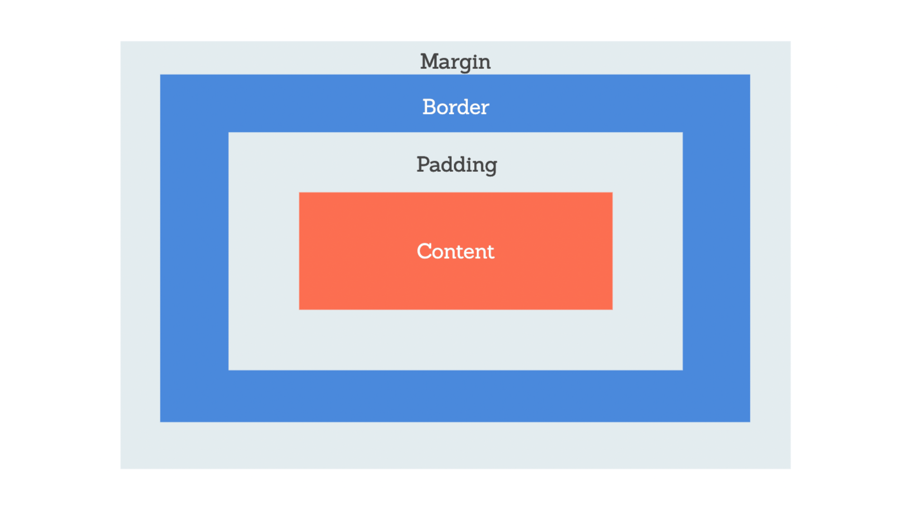
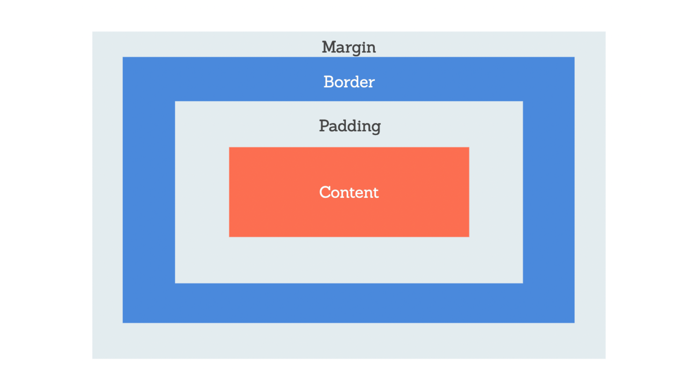

Prework Study Guide
✨ Open the Console to See What's Happening ✨

HTML
- Element: a type of content. They are enclosed in brackets. Everything inside of an element includes the text from the opening tag to the closing tag.
- The head element contains information about the webpage.
- The body element represents the visible content shown to the user.
- The head element contains information, or metadata, that helps the browser render correctly. Elements here aren't visible.
- Metadata to include in the header includes: style, base, link, metadata such as the character set, keywords, author, or viewpoint (which makes it look good on all devices).
CSS
- 3 ways to style a webpage using CSS: inline CSS, internal CSS style sheet, and external CSS style sheet.
- internal style sheet contains CSS rules for the webpage in the head section of the HTML file
- external CSS style sheet: preferred in most cases because it allows developers to keep all their CSS rules in a separate file, which makes design changes easier.
- See prework module 3.2.3 for steps on how to set up a new style sheet.
- Declarations contain two important components: the CSS property we want to apply and the value of the property. For example color and blue.
- Property VS Margin: property adds space around the content inside an element. When you increase padding, you are actually making the entire element bigger! That is because the padding, while transparent, is located inside the element, whereas the margin is the transparent buffer outside an element.
- Additional CSS help here and here
 

Git
- Git is a version control system.
- Commands always start with "git".
- Repository: a project folder that has all the files and history.
- Branch/Branching: workspace where you make changes that don't affect the live site.
- Markdown File (.md): the way GitHub files are formatted; plain text that converts to HTML.
- Commit Changes: saving a new version of a file; changes your branch, too.
- Pull Request/PR: asking for changes on a branch to merge into another branch; discuss & review work with others.
- Merge: when PR is approved, changes are merged with main branch; publish or deploy to live site
- Issue: a way to report a task or fix; track on project board; open for new issue then close when done.
JavaScript
- JavaScript is the tool that takes a static HTML/CSS webpage and makes it interactive. Every time you do something with a webpage, such as click a button, retrieve data, or fill out a form, JavaScript is at work!
- basic JavaScript features: variables, strings, and data types
- Additional reading on JS can be found here and here.
- Console: refers to a test environment that developers use to check out their code
- Read more about console log here.
- JavaScript is linked between the footer and body elements of the HTML file at the bottom of the file.
- Control flow is the order in which a computer executes code in a script. In JavaScript, code runs from the first statement at the top of the page, down to the last statement at the bottom of the page.
- Control flow can be interrupted, however. We can use conditional statements and loops to control the order in which code is executed, or if it is even executed at all.
- When the computer encounters an if statement in a JavaScript file, it will check to see if the condition that we provide is truthy. If it is, then it will do whatever action we ask it to do in between the curly brackets. If the condition isn’t true or has a value that isn’t truthy, then the computer will ignore whatever is in between the curly brackets and move on.
- What exactly do we mean by “truthy” and “falsy” in Javascript? A value is considered falsy if it is one of the following values: 0, -0, On, "", null, undefined, NaN, or a Boolean data type with the value of false. All other values, including a Boolean with the value of true, are considered truthy. To learn more about truthy and falsy values, visit the MDN Web Docs on truthy.
- array: a single variable that is used to hold a group of data. Arrays are typically used to hold data that is related in some way; used to evaluate a dozen or even hundreds of values at a time
- index: a unique number that tells the location of the data item in the array
- In JavaScript and many other programming languages, arrays are zero-indexed and sequential. This means that the first item in any array has an index of 0, not 1. The indices, or location identifiers, will always be whole numbers that increase by 1 each time.
- Loops: Imagine how tedious it would be to write this code manually if we had an array that contained 100 or even 1,000 items! In this case, the most efficient way to do this is to use loops, of which there are several types.
- A for loop contains the following three important statements:
- The starting point for our loop. Since we want to start at the beginning of the array, we declare a variable x and give it a value of 0 (because the first index of an array is always 0), as shown in the following line of code: var x = 0
- The second statement is the condition. As long as the number in the variable x is less than the length of the array, the loop will keep running. This will allow the loop to execute one time for each item in the array.
- The final statement is what allows the array to iterate over each item. Since indices follow a predictable pattern, we know the number increases by 1 each time. The code x++ is a shortcut way of writing x+1. Now every time the code loops, x will increase by 1.
- function: a set of instructions that tells the computer how to perform a certain task. A function is different from a for loop or conditional statement because functions do not automatically execute when the JavaScript file. Instead, you must call a function by name in order to execute it. A function's name is followed by parentheses.
- Read more about Math objects here.
Chrome DevTools
- right-click anywhere in the browser window and select "Inspect" from the menu
- You can also open Chrome DevTools using keyboard commands. If you’re using macOS, you can press Command+Option+I,
- Deployment: making a website live for others to see
- Every deployed website has a unique address, which is known as a Uniform Resource Locator, or URL. The URL appears in a browser's address bar when the website is displayed. URLs allow users to find and visit our website.
- README on GH: A README is like a cover page to your GitHub repo and can be seen by anyone who looks at your GitHub projects. For more info on creating a professional README, look here.
- Badges aren't necessary, but they demonstrate street cred. Badges let other developers know that you know what you're doing. Check out the badges here.